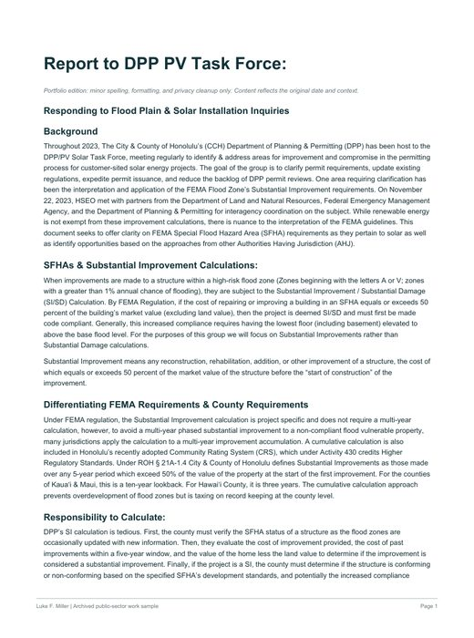
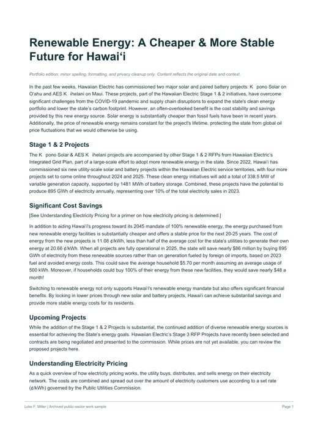
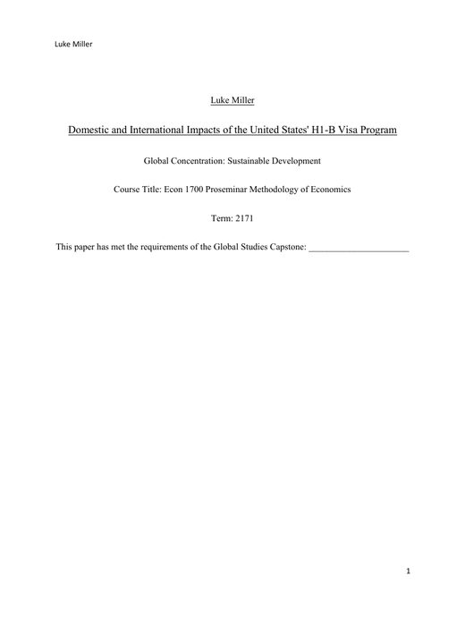
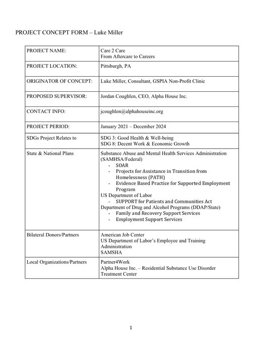
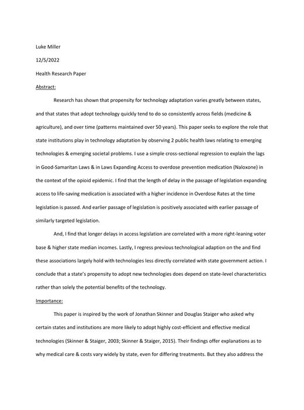

Luke F. Miller · Portfolio
Economics, energy,
evaluation & data
I’m Luke F. Miller, an economist and Ph.D. candidate who builds forecasts, evaluations, models, and public-facing analysis for utilities, agencies, researchers, and mission-driven organizations.
Selected downloads
Research, policy analysis, evaluation, and public-facing tools. Each preview opens the complete document.

Latest manuscript · 54 pages
WOW Factor: Tourism Transport Disruption and Destination Impacts in Iceland
A Bayesian structural time-series study of passenger and tourism labor-market impacts following WOW Air’s 2019 bankruptcy.
Download manuscript →
Energy policy memo
Flood zones and solar permitting
Technical requirements translated into practical interagency guidance.
Download PDF →
Public communication
Renewable-energy pricing brief
Project pricing, avoided costs, contracts, and oil-price exposure explained clearly.
Download PDF →
Policy evaluation
H-1B visa program analysis
Domestic and international effects examined through a policy lens.
Download PDF →
Program design
Care to Care proposal
Aftercare services connected to employment pathways and implementation planning.
Download PDF →
Public-health research
State variation in naloxone uptake
Policy and behavioral factors associated with overdose-response adoption.
Download PDF →Profile
I work across municipal utility finance, energy systems, public policy, program evaluation, and applied data science. My current work includes load and revenue forecasting, cost-of-service analysis, rate design, wholesale power settlements, billing-system quality assurance, and automation.
This portfolio brings together public-sector analysis, economic research, decision tools, and live data products—with methods and assumptions made visible.
Experience & Projects
Professional roles, applied work, and downloadable project artifacts.
View section →Research
Current manuscripts, collaborative work, publications, code, and data.
View section →Data Visualizations
Daily-updated solar forecasts, transparent modeling, and downloadable data.
View section →Résumé & CV
Professional experience, education, methods, and selected accomplishments.
Download résumé →Download academic CV →